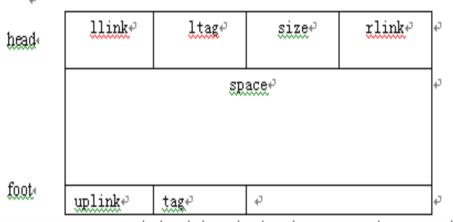

|
|
第八章 动态存储管理
§8.3 边界标识法
可利用空间表是双向循环链表结构。可使用首次拟合法，也可使用最佳拟合法。其特点是在每个内存区的头部和底部两个边界上分别设有标识，以标识该区域为占用块或空闲块，使得在回收用户释放的空闲块时易于判别在物理位置上与其相邻的内存区域是否为空闲块，以便将所有地址连续的空闲存储区组合成一个尽可能大的空闲块。
8·3·1 可利用空间表的结构

Space为一组地址连续的内存区域，它的大小由head中的size域指示，并以头部head和尾部foot作为它的两个边界；在head和foot中分别设有标志域tag，且设定空闲块中tag的值为0，占用块的值为1，foot位于结点底部，它的地址是随结点中space空间的大小而变的。Head中的llink和rlink分别指向前驱结点和后继结点，foot中的uplink域也为指针，它指向本结点，它的值即为该空闲块的首地址。
表中不设表头指针，表头指针pav可以指向表中任一个结点。表头指针为空，则表明可利用空间表为空。
8·3·2 分配算法
从表头指针pav所指结点开始，在可利用空间表中查找第一个不小于n的空闲块m即可分配。规则如下：
（1）若m-n<=e(e是适当常量)，则将m全部分给用户。为避免修改指针，约定将结点中的高地址部分分配给用户。（2）每次分配后，令pav指向刚进行分配的结点的后继结点。
分配算法见教材。
8·3·3 回收算法
用户释放占用块，系统要立即回收。为使相邻的空闲块成为较大的结点，要查看左右邻是否为空闲块。共分4种情况：
（1）空闲块的左右邻均为“占用块”：只需将空闲块插入可利用空间表中即可。
（2）空闲块的左邻为“占用块”，右邻为空闲块：将空闲块和右邻空闲块合并，修改循环链表前驱后继指针、空闲块的size、以及uplink等。
（3）空闲块的右邻为“占用块”，左邻为空闲块：将空闲块和右邻空闲块合并，修改空闲块的size、以及uplink等。
（4）空闲块的左右邻均为空闲块：将三块空闲块合并，修改循环链表前驱后继指针、空闲块的size、以及uplink等。
教材P201—P204给出了示意性算法。
|
|